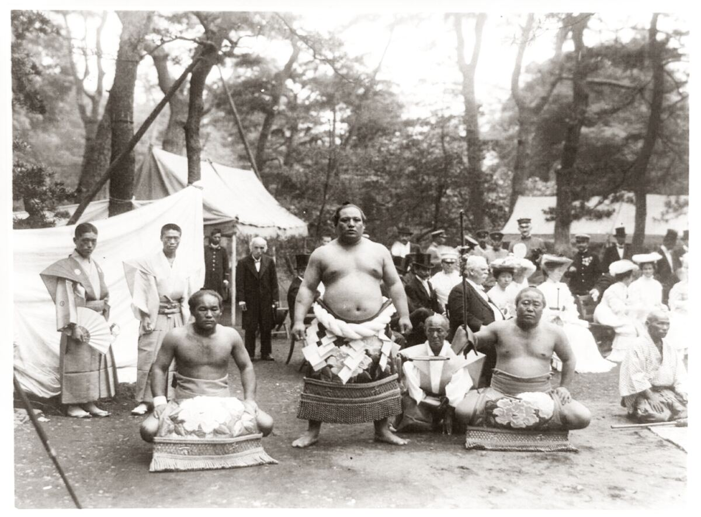

Grappling · Japan
Sumo
Japanese wrestling: force the other out of the ring or down — ritual, weight, and a short violent burst.

Find a topic
A map of this art. Live entries are links. The rest is mapped, not written yet.
What Is Sumo?
Sumo is Japan’s indigenous wrestling sport, professionalized in the ōzumō of the Japan Sumo Association and practiced amateur worldwide. Two wrestlers start from a crouch. The one who first touches down with anything but the sole, or who leaves the circular ring, loses.
The salt, the stomps, the topknot, and the ranking list (banzuke) are not tourism. They are the professional culture. This hub is the combat encyclopedia entry, not a travel essay.
How Sumo Works
The tachiai — the initial charge — decides many bouts in seconds: slap, belt grab, or pull-aside. Yorikiri (force out with the belt) and oshidashi (force out by push) are the famous finishes. Throws, trips, and twists fill the rest of the kimarite list.
There is no pin in the folkstyle sense and no submission. Compared with judo, the ring boundary is a third opponent. Compared with wrestling, the stance is heavier and the bout is shorter.
Ring wrestling, not newaza
Sumo’s ritual and the heya (stable) system are part of how the sport reproduces itself. Amateur sumo exists without all of that professional scaffolding. Both belong under this hub.
What You’ll Find Here
This hub is the live overview. Published entries are links. Fighters, gyms, rules, and news are mapped for later — even when those pages are not written yet.
- Related hubs. Judo, Wrestling, Sambo.
- Fighters / stables / rules / news. Basho results and rikishi entries — mapped, not written yet.
FAQ
Questions we hear on the mats, in gyms, and when fighters compare styles.
Why are sumo wrestlers so large?
Mass helps at the tachiai and on the belt. Technique still decides upsets. Size is a strategy, not the whole art.
Is a slap legal?
Open-hand strikes to the body and face (harite) appear in the sport. Fists are not the tool. The ring referee’s judgment is part of the ruleset.
Can a smaller person win?
Yes — trips, sidesteps, and throws exist specifically for that. It is still a heavyweight-friendly sport.
The Bottom Line
Sumo is force-out or force-down wrestling in a ring with a deep professional culture. Read judo and wrestling when you want neighboring grappling sports.